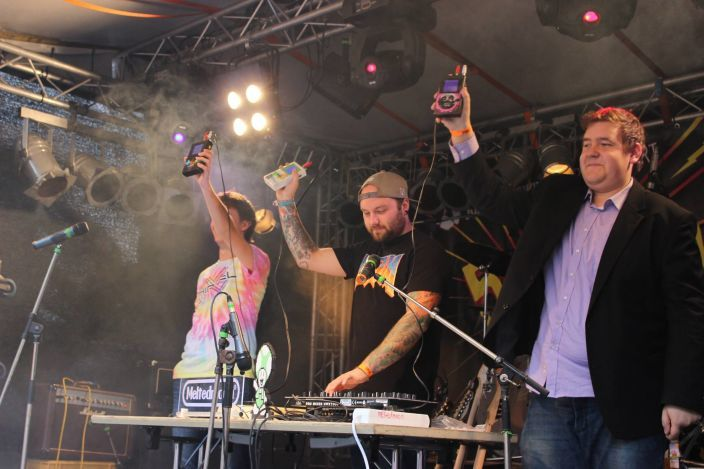
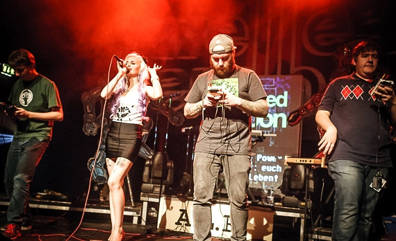

Gallery

We use nothing but Gameboys for live concerts - if you don't believe that they can make some heavy sounds, come to one of our concerts.

We have made remixes for the band "Welle:Erdball", which are also featured on their albums.

We don't just make music - We are a live band, where fun is #1 priority.

We make music with Gameboys, and Nintendo is our friend and partner.
Playlist with videos from live concerts, not filmed by us. We keep this list up to date every time we find another video on YouTube that shows us performing somewhere. If you want your video of our concert featured in that list, send us a link!
Music Video for the song "Pripyat", which is on our album "Meltdown". We filmed the video in the city of Pripyat, because that's what the music is about (decay and hope, fall and rise, whatever - hence the name). Pripyat is a ghost city in northern Ukraine, directly next to the Chernobyl Nuclear Power Plant - we were there, we will never forget (not only the impressions, but mainly what fatal consequences human stupidity can have, even a long time after the meltdown).
A video with impressions from most of the many gigs we had in the years 2014 and 2015, including Welle:Erdball concerts, festivals and the Gamescom. The music is our 8 bit medley with remixes from well-known 80s, 90s and contemporary songs.